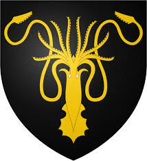

House Greyjoy of Pyke is one of the Great Houses of Westeros. It rules over the Iron Islands, a harsh and bleak collection of islands off the west coast of Westeros, from the castle at Pyke. The head of the house is the Lord Reaper of Pyke. House Greyjoy's sigil is traditionally a golden kraken on a black field. Their house words are "We Do Not Sow," although the phrase "What Is Dead May Never Die" is also closely associated with House Greyjoy and their bannermen, as they are associated with the faith of the Drowned God. Following the extinction of House Hoare, the ironborn elected House Greyjoy as Lord of the Iron Islands, an administrative region of the Seven Kingdoms, as vassals to House Targaryen. During Robert's Rebellion, House Greyjoy declared for House Baratheon. During the Greyjoy Rebellion, Balon Greyjoy declared sovereignty as the Kingdom of the Iron Islands and seceded from the Seven Kingdoms, but the rebellion was put down. House Greyjoy bent the knee to Robert Baratheon, and the Kingdom of the Iron Islands became defunct. During the War of the Five Kings, Balon Greyjoy declared himself King of the Iron Islands and the Iron Islands independent once more, restoring the Kingdom of the Iron Islands and seceding from the Seven Kingdoms. Following his assassination and the election of his brother and murderer, Euron, as the new King of the Iron Islands, House Greyjoy was divided between Euron and his followers, and Balon's surviving children, Yara and Theon, and their followers. During the Last War, Euron allied with Cersei of House Lannister, while Yara and her followers allied with Daenerys Targaryen, who Euron originally intended to ally with. After being set free by Theon, Yara retook the Iron Islands in Daenerys's name. Theon died at the Battle of Winterfell while Euron died at the Battle of King's Landing, leaving Yara firmly as the head and last living member of House Greyjoy.
House Greyjoy is one of the Great Houses of Westeros. Their lands are the Iron Islands off the west coast of the continent. They rule from their castle Pyke from the island of the same name. The Iron Islands are harsh and bleak and the Greyjoys have traditionally survived by raiding their neighbors. They have always had plans to conquer the mainland, as their ancient tradition of reaving and plundering made them dominant in the waters. The head of the house is the Lord Reaper of Pyke. House Greyjoy boasts descent from the Grey King, a legendary King of the Iron Islands said to have ruled for a thousand years and taken a mermaid as his wife. Like the vast majority of ironborn, they worship the Drowned God. The ironborn would never follow a hereditary ruler; instead they would choose their own monarchs from the Kingsmoot. Lord Balon Greyjoy was the founder of the Kingdom of the Iron Islands. He led a rebellion against King Robert Baratheon years after the downfall of the Targaryens in Robert's Rebellion. The Iron Fleet, under Euron Greyjoy, sailed for Lannisport and burned the Lannister fleet, which made them unopposed in the Sunset Sea. Balon's sons Rodrik and Maron were killed in the unsuccessful rebellion, the former at Lord Jason Mallister's hand at Seagard and the latter during the Baratheon siege of Pyke. The Iron Fleet would later be defeated by the royal fleet under Stannis Baratheon at Fair Isle. Balon's only surviving son Theon was made a ward of Lord Eddard Stark to ensure Balon's submission to King Robert. Only his daughter, Yara Greyjoy, and two of his brothers remained on the Iron Islands after his defeat. At some point, Balon exiled his younger brother, Euron Greyjoy, who became a feared pirate that terrorized the seas as far as from Oldtown in Westeros to Qarth in Essos.